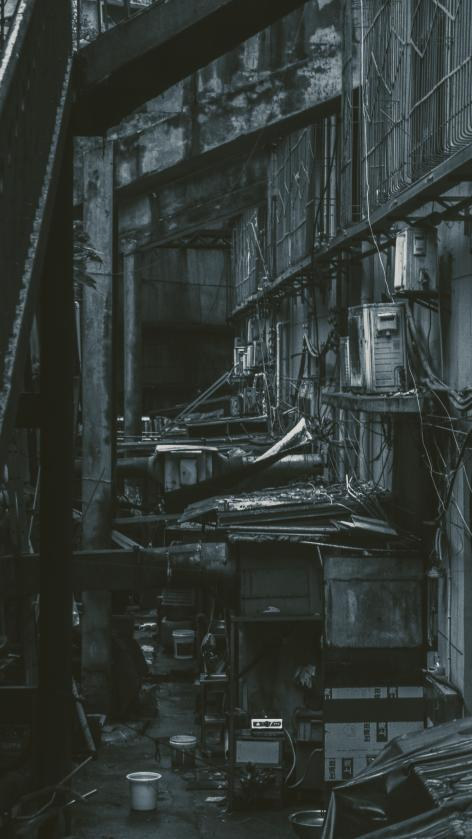

眼角的痣，伤口的蛆

眼角的痣，伤口的蛆2024
这是我曾经就读的幼儿园旁一个奇异的空间。小时候我并不觉得它有什么特别，后来路过，发现它还和从前一样，像被时代遗忘了一样。 这张照片最初叫《时代的阴翳》。后来我开始写一部自传体小说，把第一章命名为《眼角的痣，伤口的蛆》，于是又想起了这张照片，并将它改为现在的名字。

这是我曾经就读的幼儿园旁一个奇异的空间。小时候我并不觉得它有什么特别，后来路过，发现它还和从前一样，像被时代遗忘了一样。 这张照片最初叫《时代的阴翳》。后来我开始写一部自传体小说，把第一章命名为《眼角的痣，伤口的蛆》，于是又想起了这张照片，并将它改为现在的名字。